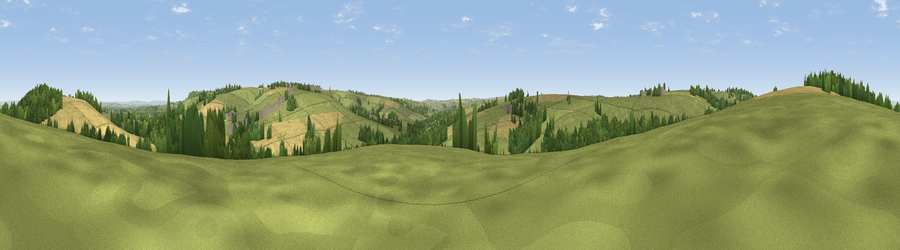

Viewpoint near Evershot
#32525 in England · top 74% of its area beats it · near EvershotWhere it is
The exact computed spot (ST 58675 04025). Click the marker for map links.
The view, rendered

A 360° render of this exact spot computed from the terrain model, tree cover and land cover — summer colours, afternoon light, calibrated against photographs of famous viewpoints. Real trees, hedges and buildings will differ in detail.
The panorama
Grey silhouette: terrain skyline in each direction (720 bearings, Earth curvature and refraction included). Dashed green: skyline with trees (+15 m) and buildings (+8 m) as obstacles. Blue strip: how far the ground is visible on each bearing.
Where the view opens
Wedge length = distance to the farthest visible ground on that bearing (vegetation-aware). Rings at 10, 25 and 50 km.
What fills the view
63% grassland · 24% cropland · 12% woodland · 1% built-up
Angular shares of the visible panorama (visual magnitude), not map area. Landscape diversity 0.41 (0–1 Shannon).
Key numbers
More beautiful places nearby
The staircase of upgrades: each row has a higher view potential than everything closer. Driving times are estimates from straight-line distance, calibrated against real road routing — check an actual route before setting out.
| Place | Direction | Drive | Score |
|---|---|---|---|
| West Hill | W · 2 km | ~5 min | 52.3 |
| Viewpoint near Chetnole | N · 2 km | ~6 min | 67.4 |
| Viewpoint near Hilfield | ENE · 6 km | ~13 min | 71.6 |
| Viewpoint near North Poorton | SW · 8 km | ~16 min | 75.4 |
| Viewpoint near North Poorton | WSW · 9 km | ~17 min | 77.0 |
| Viewpoint near Nettlecombe | SSW · 10 km | ~20 min | 79.3 |
| Viewpoint near Askerswell | SSW · 10 km | ~20 min | 81.7 |
| Lewesdon Hill | WSW · 15 km | ~27 min | 83.3 |
50.83427, -2.58820 · source: screening · position refined by local search. Computed location — check access rights before visiting.